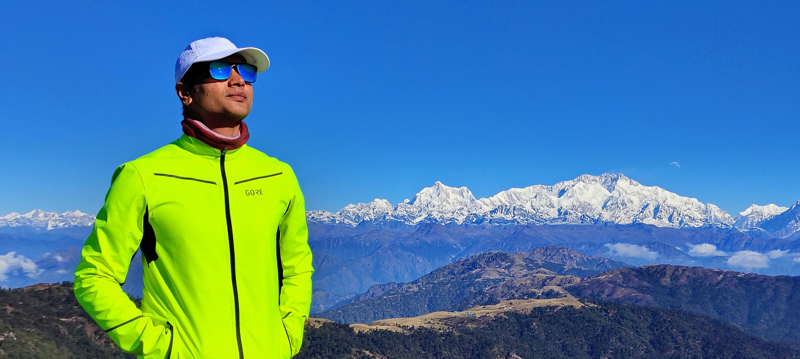

I'm a sports and fitness enthusiast who finds meaning in movement — whether that's chasing a cricket ball, climbing a mountain trail, or simply walking through a forest at dawn.
The mountains are where I feel most alive. There's something about high altitude that strips away noise and leaves only what matters. This photo was taken at Sandakphu — the highest point in West Bengal — with the Kangchenjunga range behind me. Days like that remind me why I keep going.
I write about the things that shape me: the discipline of sport, the humility of nature, the unexpected lessons that come from pushing beyond comfort. These aren't essays with answers — they're notes from someone still figuring it out.
When I'm not on a trail or a cricket pitch, I work in technology — helping organisations think through engineering, transformation, and what it means to build things that last.